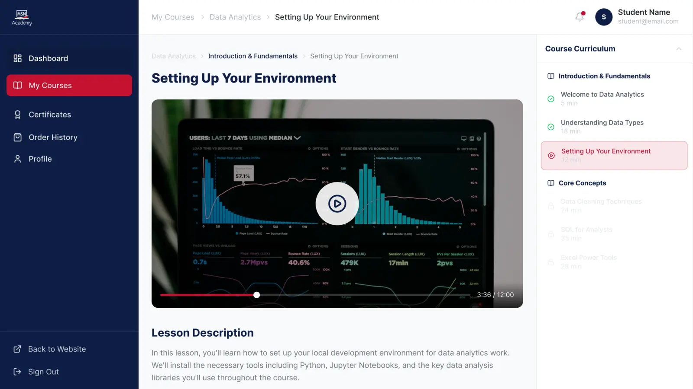
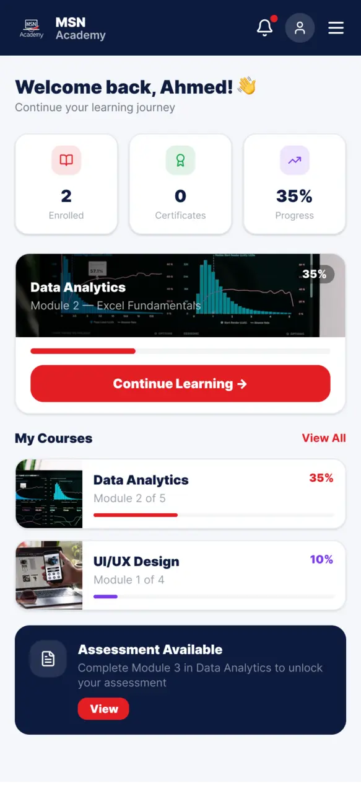

01 Internship / Website & LMS
MSN Academy
A connected journey from
finding a course to learning.
MSN / Learning experienceWeb + mobile


UX audit · Web & mobile interfaces · Developer handoff
Explore the case study